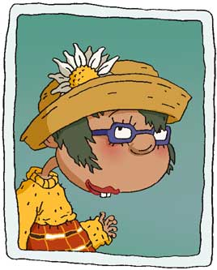

|
 |
Macie Lightfoot only breathes properly out of one nostril.
Allergic to a multitude of foods, fabrics and fragrances, Macie wears a constant look of panic that implies she has a difficult time distinguishing good news from bad.
Somewhat ill prepared for Junior High School, Macie is just grateful to have somewhere to rest her tray at lunch.
Any sort of change alarms Macie, who has been wearing her hair the same way since third grade.
Macie relies heavily on her friends to prepare her for things and often convulses with nerves as her friends discuss something that she finds intimidating: like the unforseen elimination of Jell-O from the school cafeteria.
When Macie is under pressure she is prone to break out in enormous red hives, so her friends try to run interference for any potential stress in her life.
|